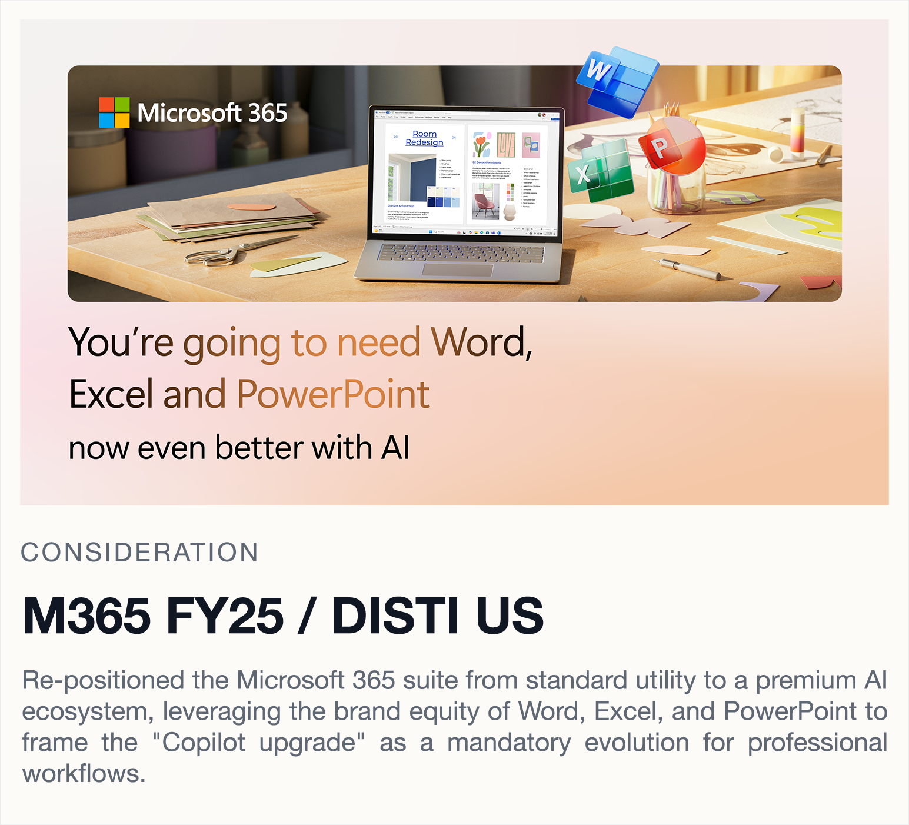
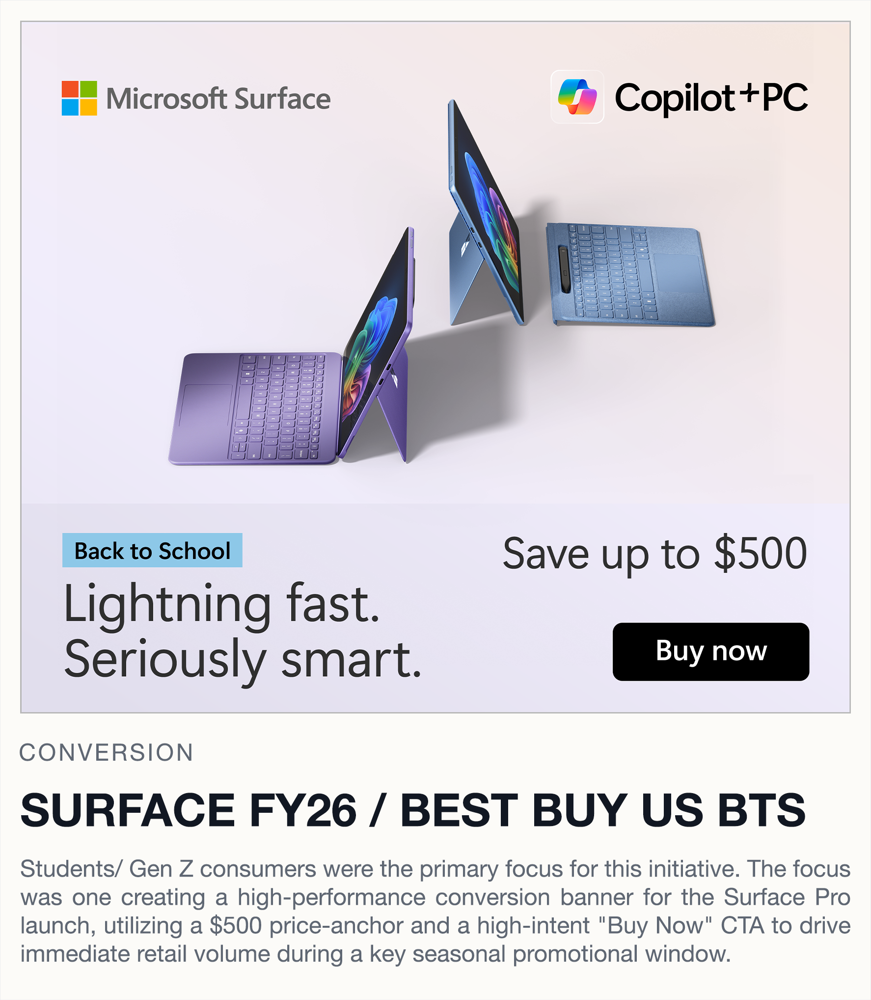

FOCUS
THE WORK BALANCED BRAND CONSISTENCY WITH CONVERSION GOALS, MOVING FLUIDLY BETWEEN DIGITAL LANDING PAGES, PAID AND SOCIAL ASSETS, RETAIL SIGNAGE, AND THREE-DIMENSIONAL MERCHANDISING SYSTEMS.
MICROSOFT PORTFOLIO / 2022 - NOW
A focused collection of landing pages, promotional assets, and in-store experiences created across Microsoft 365, Windows, Surface, Copilot+ PC, and Xbox.
FOCUS
THE WORK BALANCED BRAND CONSISTENCY WITH CONVERSION GOALS, MOVING FLUIDLY BETWEEN DIGITAL LANDING PAGES, PAID AND SOCIAL ASSETS, RETAIL SIGNAGE, AND THREE-DIMENSIONAL MERCHANDISING SYSTEMS.
Approach
EVERY DELIVERABLE WAS BUILT TO FEEL CLEAR AT FIRST GLANCE: CLEANER HIERARCHY, STRONGER FRAMING, AND PRODUCT STORYTELLING THAT COULD HOLD UP ACROSS BOTH ON-SITE AND OFF-SITE TOUCHPOINTS.
[ DIGITAL PROJECTS ]

See campaign See campaign
See campaign

See campaignPROJECT NOTES
Across these digital campaigns, the priority was not just visual polish. The system needed to clarify the message quickly, support sales goals, and still feel premium enough to elevate the Microsoft brand across varied partner environments.